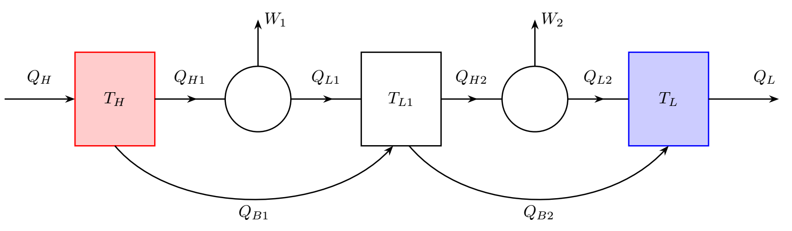

Y25 (2025) — English translation
It is well known that the maximum efficiency of a heat engine operating with two thermal reservoirs (heater and refrigerator), at fixed temperatures of the heater and refrigerator, corresponds to the Carnot cycle. However, in this cycle, heat transfer from the heater to the working fluid occurs at equal temperatures, and therefore infinitely slowly. In any real engine, a finite temperature difference must be maintained during heat transfer, which leads to a decrease in efficiency. In this task we will consider different aspects of the behavior of engines, taking into account the fact that processes do not occur infinitely slowly, which means that processes in the engine are irreversible.
In this part, we will assume that in addition to performing useful work, the engine piston overcomes the force of friction. We will assume that the engine piston moves in a cylinder of constant cross-section along the guides of this cylinder. Suppose that during a cycle the piston moves a distance $D$ and back, a quantity of heat $Q_1>0$ is supplied to it, and a quantity of heat $Q_2 >0$ is removed. The friction force depends on the piston speed as $F = \gamma v$, where $v$ is the piston speed. Cycle duration $\tau$. For simplicity, we will assume that for half the cycle the piston moves at a constant speed in one direction, and for the second half - in the other direction.
Let the temperatures of the heater and cooler of the heat engine be $T_1$, $T_2$, respectively. The working fluid is $\nu$ moles of an ideal monatomic gas. By analogy with the Carnot cycle, the process consists of two isotherms with temperatures $T_1'$ and $T_2'$, with $T_1 > T_1' > T_2' > T_2$ connected by two adiabats. Throughout Part B, temperatures $T_1$ and $T_2$ are considered constant. We will consider the heat transfer power to be proportional to the temperature difference $$ P_1 = \alpha_1 \Delta T _1 = \alpha_1 (T_1 - T_1'), \quad P_2 = \alpha_2 \Delta T_2= \alpha_2 (T_2' - T_2). $$На изотерме с температурой $T_1'$ к газу подводится количество тепла $Q_1$, а его объем увеличивается от $V_1$ до $V_2$, на изотерме с температурой $T_2'$ отводится количество тепла $Q_2$.
In the following paragraphs we will determine the values of the temperature differences at which the useful power is maximum. To do this, we will change the temperature differences $\Delta T_1$ and $\Delta T_2$. At the maximum, the corresponding change in power must be zero to the first order of smallness.

Due to non-ideal thermal insulation of a heat engine, it may happen that part of the heat supplied to it is not transferred to the working fluid, but directly flows from the heater to the refrigerator. To explore the role of such internal heat leaks, consider a heat engine, which is a chain of two engines. In this case, the refrigerator of the first engine is the heater of the second. Both engines can perform useful work. In addition, some of the heat is transferred directly from the engine heater to the refrigerator. Let us introduce the following notation $Q_{Hi}$ – the amount of heat that reached the working body of the i-th heat engine $Q_{Li}$ – the amount of heat that the working body of the i-th heat engine gave to its refrigerator $\eta_i$ – the efficiency of the i-th machine $Q_{Bi}$ – the amount of heat that in the i-th machine directly transferred from the heater to the refrigerator $T_H$ – the temperature of the first heater $T_{L1}$ – temperature of the first refrigerator (also the heater of the second machine) $T_L$ – temperature of the second refrigerator The first engine receives from the heater a certain amount of heat $Q_H$, which is partially transferred to the working fluid, and partially transferred directly to the refrigerators of the first and second heat engines due to leaks. We will assume that the leakage values are proportional to the temperature differences of the corresponding heater and refrigerator, as well as the heat supplied to the first heater: $$Q_{B1} = N_1 Q_H = K_1 (T_H - T_{L1}) Q_H, \quad Q_{B2}=N_2 Q_H = K_2 (T_{L1} - T_{L}) Q_H$$
Введем следующие обозначения
Первый двигатель получает от нагревателя некоторое количество теплоты $Q_H$, которое частично передается рабочему телу, а частично передается непосредственно холодильникам первой и второй тепловой машин за счет утечек. Будем считать, что величины утечек пропорциональны разностям температур соответствующих нагревателя и холодильника, а также подведенному к первому нагревателю теплу:
$$Q_{B1} = N_1 Q_H = K_1 (T_H - T_{L1}) Q_H, \quad Q_{B2}=N_2 Q_H = K_2 (T_{L1} - T_{L}) Q_H$$
Source: https://pho.rs/p/4557